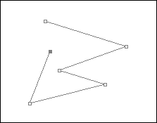
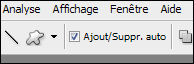
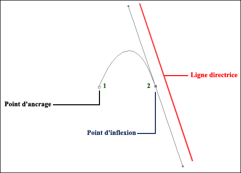
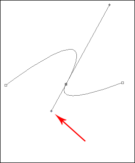
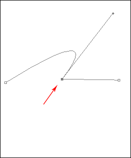
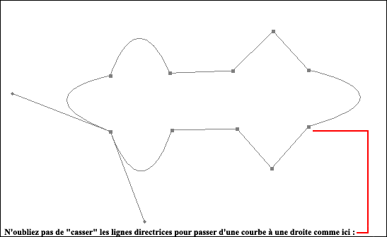
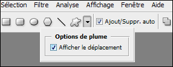
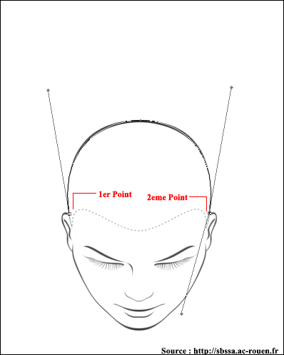

Vous allez apprendre dans ce tutoriel à utiliser l'outil plume de Photoshop, ô combien utile ! Veuillez noter que cet outil est présent dans beaucoup de logiciels, notamment dans la quasi-totalité des applications Adobe (Photoshop, Illustrator, Flash, After Effects...) où l'utilisation reste la même. Si vous êtes prêts, on peut y aller ! :)
À noter :
le raccourci CTRL sur Windows équivaut à COMMANDE sur MacOS ;
le raccourci ALT sur Windows équivaut à OPTION sur MacOS.
Tout d'abord, nous allons voir à quoi sert l'outil plume.
Sachez que l'outil plume est représenté par cette icône dans les applications Adobe :
Elle sert à tracer des courbes vectorielles ou des courbes de Bézier. Ces courbes ne sont pas constituées de pixels et sont indépendantes de la résolution ! C'est-à-dire que vous pouvez agrandir votre tracé sans perdre en qualité.
Mais la plume sert aussi d'outil de sélection, elle est d'ailleurs très pratique pour découper des formes quand on sait la maîtriser ! Et c'est ce que vous allez apprendre ici.
On peut y aller ! Vous pouvez commencer à ouvrir Photoshop. :)
1 : Cette option de l'outil plume (par défaut) vous permet, à partir de votre tracé, de créer un nouveau calque avec votre forme, et celle-ci sera remplie avec la couleur de premier plan. 2 : Cette option est celle que nous allons utiliser pour vous apprendre à manier vos tracés ! Elle est semblable à la précédente mais ne crée pas de nouveau calque et ne remplit pas votre tracé de couleur. Nous pourrons ensuite convertir ce tracé en sélection, par exemple ! ;)
3 : Si vous sélectionnez cette case, vos tracés seront reliés entre eux par des droites et des courbes, c'est celle que nous utiliserons !
4 : Cette case permet de faire des tracés libres, nous ne l'utiliserons donc pas car elle ne nous apprendra pas comment utiliser intelligemment la plume. :D
Vérifiez que les options 2 et 3 soient sélectionnées et commençons par tracer des segments.
Les points d'ancrage pour relier nos segments
Cliquez sur votre plan pour créer un point d'ancrage. Un point d'ancrage permet de définir la forme du tracé. Le tracé passera obligatoirement par tous les points d'ancrage.

Ensuite, cliquez ailleurs pour créer un autre point d'ancrage : les 2 points sont reliés dans l'ordre où ils ont été créés par un segment.
Créez plusieurs points d'ancrage et regardez votre résultat. Sachez que vous n'êtes pas obligés de boucler votre tracé. Pour vous repérer, le point grisé est celui qui est actuellement sélectionné.
Vous pouvez déplacer un point en maintenant appuyée la touche CTRL et en le déplaçant (en fait, lors de l'utilisation de la plume, la touche CTRL active temporairement l'outil de sélection/déplacement des points d'ancrage).
Vous pouvez aussi déplacer un segment en le sélectionnant et en le déplaçant de la même manière que pour un point. ;)
Pour désélectionner votre tracé, cliquez hors du tracé en maintenant la touche CTRL appuyée.
Si vous voulez déplacer plusieurs points, ou tout le tracé, gardez la touche CTRL enfoncée et tracez un cadre de sélection pour sélectionner vos points. Vous pouvez ensuite déplacer votre sélection toujours en maintenant la touche CTRL appuyée et en déplaçant votre tracé. :)
Modification du tracé
Votre tracé n'est pour l'instant pas fermé. Si vous voulez le continuer, cliquez sur un des 2 points aux extrémités et continuez votre tracé.
Vous avez aussi la possibilité d'ajouter et de supprimer des points en cochant la case Ajout/Suppr. auto dans la barre d'options.

Cliquez alors sur un segment pour ajouter un point et sur un point pour le supprimer. Pour fermer votre tracé, cliquez sur l'autre extrémité.
Gérer les tracés
Notez la présence de votre tracé dans l'onglet Tracés (Si vous n'avez pas cet onglet, allez dansFenêtre > Tracés). Vous pouvez apercevoir votre tracé :
Pour masquer votre tracé, désélectionnez-le dans l'onglet des tracés.
Si vous voulez le mémoriser, double-cliquez sur votre tracé dans l'onglet Tracés et enregistrez-le. Le fait d'en créer un autre ne supprimera pas l'ancien !
Nous avons vu comment créer des segments en les reliant par des points d'ancrage, et maintenant, nous allons voir l'intérêt premier de la plume : les tracés complexes. ;)
Hé ! Le mot "complexe" me fait peur ! Je pars ! Ciao !
NNNOOONNN, non, non ! Revenez, le mot "complexe" n'a rien à voir avec la difficulté mais c'est simplement le fait que nos tracés ne seront plus des droites mais des courbes, plus précisément des courbes de Bézier !
Donc : pas de panique ! ;)
Les points d'inflexion pour créer des courbes
Inflexion... ce mot désigne tout simplement un point qui est la base du tracé de courbes.
Un exemple vaut mieux qu'un long discours. Ouvrez un nouveau document, et avec l'outil plume, faites un point d'ancrage normalement sur votre plan.
Puis, pour créer un point d'inflexion, commencez par cliquer à un autre endroit sur votre plan et faites glisser votre souris avant de relâcher le clic. Vous venez de créer un point d'inflexion et une ligne directrice :

Cliquez ensuite encore un peu plus loin pour créer un autre point d'ancrage. Vous remarquez que les lignes directrices servent de support pour créer les courbes.
Pour afficher les lignes directrices d'un point d'inflexion, cliquez-lui dessus en appuyant sur CTRL.
Modifier la ligne directrice d'un point d'inflexion
Vous pouvez modifier la ligne directrice en déplaçant les points aux extrémités de cette ligne tout en maintenant CTRL appuyée encore une fois.

Vous voyez que la ligne a bougé ainsi que la courbe ! Donc, les propriétés de la courbe dépendent des lignes directrices. On appelle aussi ces lignes des tangentes. Ce n'est pas pour rien, car ces lignes sont tangentes à la courbe. La longueur des tangentes influe aussi. Je ne vais pas rentrer dans les détails, et je vous laisse consulter l'article de Wikipédia sur les courbes de Bézier si vous le désirez. ;)
Continuons. Vous pouvez aussi scinder votre ligne directrice en deux pour former un sommet. Pour cela, sélectionnez votre point d'inflexion où se trouvent les lignes directrices à "casser" et en gardant la touche ALT enfoncée, déplacez le point à l'extrémité de la ligne à "casser".
Comme par magie, cette ligne devient indépendante de l'autre, contrairement à tout à l'heure, et vous pouvez encore la déplacer en appuyant sur ALT.
Et si je ne veux pas que la deuxième courbe soit... une courbe ? :)
Très simple : si ce n'est déjà fait, cassez la ligne directive du côté où vous voulez aplatir la courbe et déplacez le point pour le confondre avec le point d'inflexion de cette ligne directive :

Très simple !
Vous pouvez ensuite continuer votre tracé en sélectionnant votre dernier point (CTRL) et en ajoutant des points d'ancrage ou d'inflexion. ;) Vous pouvez aussi convertir un point d'ancrage en point d'inflexion en le déplaçant tout en maintenant la touche ALT enfoncée.
Libre à vous de faire ce que vous voulez ! :)

Le meilleur moyen d'apprendre est de s'entraîner, vous l'avez compris. ;)
Prévisualisation du tracé
Une dernière fonctionnalité pratique. Vous avez aussi la possibilité de faire apparaître votre tracé en direct en cochant la case Afficher le déplacement dans les options de la plume :

Ainsi, vous avez une prévisualisation de la courbe en direct quand vous déplacez la souris, et ceci sans ajouter de points. ;)
Faire des tracés, c'est beau mais ça sert à quoi ? :D
Transformer un tracé en sélection
Vous pouvez convertir votre tracé en sélection. C'est génial, non ? :) Cliquez droit sur votre tracé avec l'outil plume et sélectionnez Définir une sélection ou appuyez sur CTRL + ENTRÉE.
Remplir le fond et faire des contours
Vous pouvez aussi remplir le fond du tracé ou faire un contour, toujours en cliquant droit sur votre tracé. ;)
Pour le contour, on vous demande de choisir un outil. Cet outil sera utilisé pour faire le contour. Généralement, on choisit l'Outil forme (la brosse).
Redimensionner le tracé
Un avantage des tracés, comme nous l'avons dit précédemment, est qu'ils sont indépendants de la résolution !
Pour modifier la taille de votre tracé, cliquez droit sur celui-ci et sélectionnez Transformation manuelle du tracé ou appuyez sur CTRL +T. En cliquant droit à nouveau, vous pouvez lui faire subir plusieurs transformations, comme des symétries. ;)
Comme vous le voyez, le tracé ne perd pas de détails ! Pour les fans, sachez qu'Adobe Illustrator ou Inkscape sont des logiciels de dessins vectoriels, qui permettent de faire des dessins complexes en vectoriel. Je pense notamment aux logos. Faire un logo en vectoriel est un avantage, car il s'adapte à toutes les tailles sans perte de qualité. Il est alors possible de l'utiliser pour son site, ainsi que pour une immense publicité de plusieurs mètres en même temps. Magique ! :magicien:
Créer des masques vectoriels
Les tracés peuvent aussi servir de masques vectoriels, où l'intérieur du tracé laissera apparaître le calque sur lequel il se trouve.
Sélectionnez un calque, ajoutez un masque vectoriel dans Calque > Masque vectoriel et en choisissant Tout faire apparaître, Tout masquer ou Tracé sélectionné. Sélectionnez votre masque vectoriel dans l'onglet des calques et faites un tracé. La partie du calque qui est à l'intérieur de celui-ci sera visible. Le fonctionnement reste le même que pour les masques "normaux".
Utiliser un tracé comme guide de texte
Vous pouvez faire suivre la direction d'un tracé à un texte. Pour cela, dessinez votre tracé, et sélectionnez-le avec l'Outil texte (l'icône change) et tapez votre texte : le tracé sert de guide au texte. ;)
Pour terminer ce tutoriel, notez que les raccourcis utilisés dans ce tutoriel changent en fait d'outil !
Ainsi quand vous avez appuyé sur CTRL (COMMANDE sur MacOS), vous avez temporairement changé l'outil plume en Outil de sélection directe (le curseur de souris près de la plume). Et la touche ALT (OPTION sur MacOS) vous a fait passer en Outil Conversion de point (dans la catégorie de la plume). Je ne vous ai pas habitué à changer d'outil manuellement pour vous faire gagner du temps. Mais sachez quand même ce que vous faites quand vous appuyez sur une touche. :)
Un outil pratique
L'outil plume est très pratique pour découper des images. ;)
Pour découper une tête par exemple (non, j'ai pas joué dans Resident Evil !), 2 points suffisent avec la plume ! Regardez :

En tripotant les poignets des tangentes, on peut arriver à épouser correctement des formes arrondis. Après plusieurs entraînements, vous arriverez à découper des images complexes très rapidement ! ;)
Un exemple ?
Je vous montre un exemple en vidéo Flash si vous voulez voir à peu près comment vectoriser.
Sachez que j'ai fait ça rapidement pour que la vidéo ne fasse pas 200 Go mais normalement, on s'attarde un peu plus sur les détails. ;)
Ce tutoriel touche à sa fin. Si vous avez une quelconque question, n'hésitez pas à demander de l'aide sur le forum prévu à cet effet et si vous avez une remarque à propos de ce tutoriel, vous pouvez me contacter par MP. ;) Je vous souhaite une bonne utilisation de l'outil plume ainsi qu'une bonne continuation. :)
{kind=link}
{kind=link}